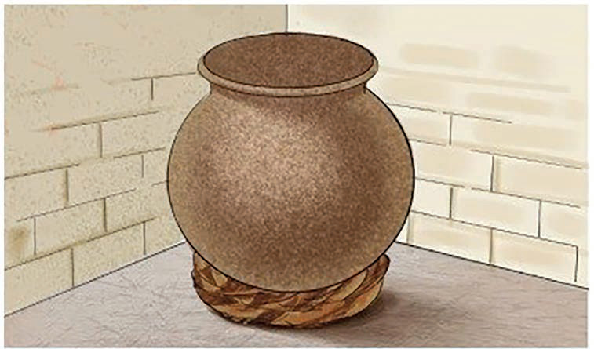

Kuhifadhi vyungu vilivyochomwa
Vyungu vya udongo vilivyochomwa hupaswa kuhifadhiwa baada ya kupoa. Kuna sababu mbalimbali za kuhifadhi vyungu hivyo. Sababu hizo ni pamoja na:
- (a) Kuvilinda visipate nyufa au kuvunjika;
- (b) Kuvikinga visichafuke;
- (c) Kuwezesha usafirishaji salama; na
- (d) Kuviwezesha kudumu kwa muda mrefu.
Vyungu vilivyochomwa na kupoa huweza kuhifadhiwa kwa namna anuwai. Miongoni mwa namna hizo ni:
1. Kukalishwa kwenye kata kama inavyooneshwa katika Kielelezo namba 12. Kata huzuia chungu kisibiringike ili kisijigonge na kuvunjika.
